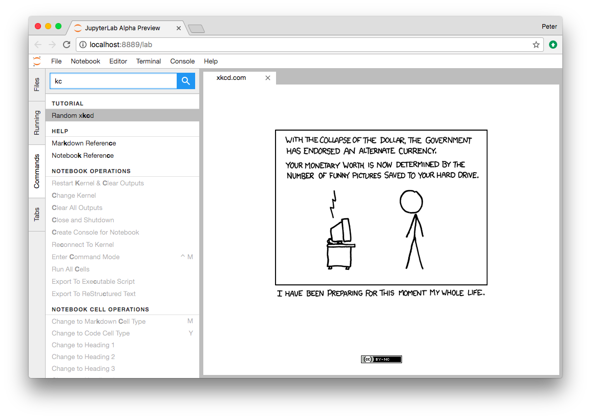
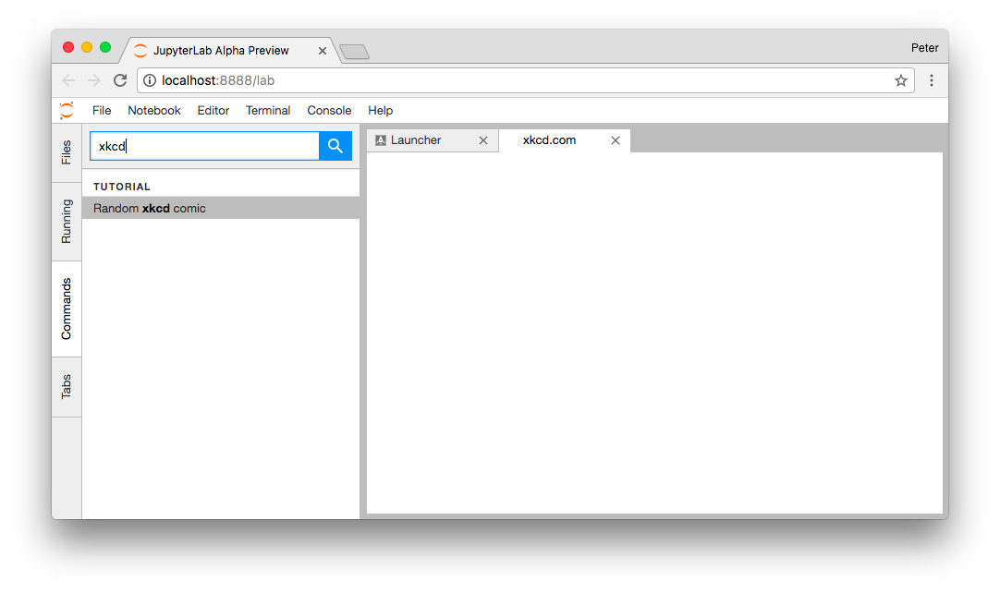
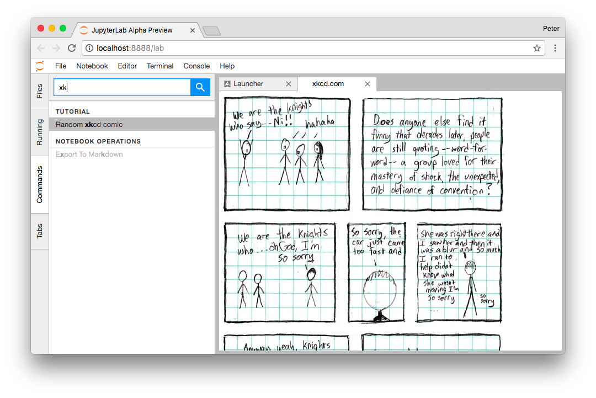
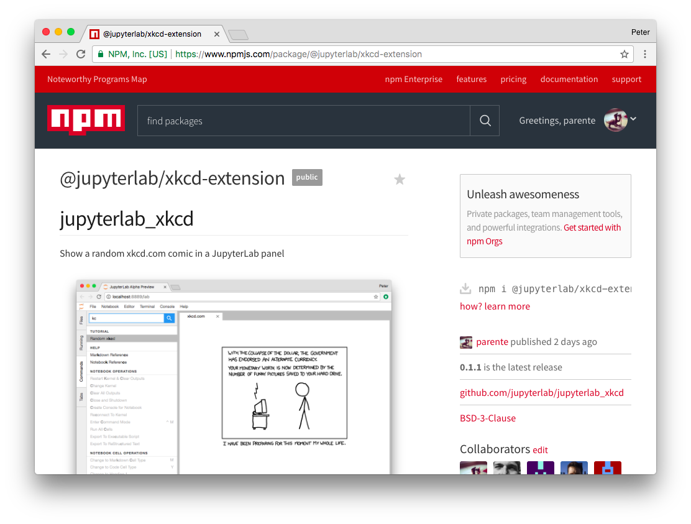

Let’s Make an xkcd JupyterLab Extension¶
Warning
The extension developer API is not stable and will evolve in JupyterLab releases in the near future.
JupyterLab extensions add features to the user experience. This page describes how to create one type of extension, an application plugin, that:
- Adds a “Random xkcd comic” command to the command palette sidebar
- Fetches the comic image and metadata when activated
- Shows the image and metadata in a tab panel
By working through this tutorial, you’ll learn:
- How to setup an extension development environment from scratch on a
Linux or OSX machine.
- Windows users: You’ll need to modify the commands slightly.
- How to start an extension project from jupyterlab/extension-cookiecutter-ts
- How to iteratively code, build, and load your extension in JupyterLab
- How to version control your work with git
- How to release your extension for others to enjoy

Sound like fun? Excellent. Here we go!
Setup a development environment¶
Install conda using miniconda¶
Start by installing miniconda, following Conda’s installation documentation.
Install NodeJS, JupyterLab, etc. in a conda environment¶
Next create a conda environment that includes:
- the latest release of JupyterLab
- cookiecutter, the tool you’ll use to bootstrap your extension project structure
- NodeJS, the JavaScript runtime you’ll use to compile the web assets (e.g., TypeScript, CSS) for your extension
- git, a version control system you’ll use to take snapshots of your work as you progress through this tutorial
It’s best practice to leave the root conda environment, the one created
by the miniconda installer, untouched and install your project specific
dependencies in a named conda environment. Run this command to create a
new environment named jupyterlab-ext.
conda create -n jupyterlab-ext nodejs jupyterlab cookiecutter git -c conda-forge
Now activate the new environment so that all further commands you run work out of that environment.
conda activate jupyterlab-ext
Note: You’ll need to run the command above in each new terminal you open
before you can work with the tools you installed in the
jupyterlab-ext environment.
Create a repository¶
Create a new repository for your extension. For example, on GitHub. This is an optional step but highly recommended if you want to share your extension.
Create an extension project¶
Initialize the project from a cookiecutter¶
Next use cookiecutter to create a new project for your extension. This will create a new folder for your extension in your current directory.
cookiecutter https://github.com/jupyterlab/extension-cookiecutter-ts
When prompted, enter values like the following for all of the cookiecutter prompts.
author_name []: Your Name
extension_name [myextension]: jupyterlab_xkcd
project_short_description [A JupyterLab extension.]: Show a random xkcd.com comic in a JupyterLab panel
repository [https://github.com/my_name/jupyterlab_myextension]: https://github.com/my_name/jupyterlab_xkcd
Note: if not using a repository, leave the field blank. You can come
back and edit the repository links in the package.json file later.
Change to the directory the cookiecutter created and list the files.
cd jupyterlab_xkcd
ls
You should see a list like the following.
README.md package.json src style tsconfig.json
Build and install the extension for development¶
Your new extension project has enough code in it to see it working in your JupyterLab. Run the following commands to install the initial project dependencies and install it in the JupyterLab environment. We defer building since it will be built in the next step.
Note
This tutorial uses jlpm to install Javascript packages and
run build commands, which is JupyterLab’s bundled
version of yarn. If you prefer, you can use another Javascript
package manager like npm or yarn itself.
jlpm install
jupyter labextension install . --no-build
After the install completes, open a second terminal. Run these commands
to activate the jupyterlab-ext environment and to start a JupyterLab
instance in watch mode so that it will keep up with our changes as we
make them.
conda activate jupyterlab-ext
jupyter lab --watch
See the initial extension in action¶
After building with your extension, JupyterLab should open in your default web browser.
In that window open the JavaScript console by following the instructions for your browser:
After you reload the page with the console open, you should see a message that says
JupyterLab extension jupyterlab_xkcd is activated! in the console.
If you do, congrats, you’re ready to start modifying the the extension!
If not, go back, make sure you didn’t miss a step, and reach
out if you’re stuck.
Note: Leave the terminal running the jupyter lab --watch command
open.
Commit what you have to git¶
Run the following commands in your jupyterlab_xkcd folder to
initialize it as a git repository and commit the current code.
git init
git add .
git commit -m 'Seed xkcd project from cookiecutter'
Note: This step is not technically necessary, but it is good practice to
track changes in version control system in case you need to rollback to
an earlier version or want to collaborate with others. For example, you
can compare your work throughout this tutorial with the commits in a
reference version of jupyterlab_xkcd on GitHub at
https://github.com/jupyterlab/jupyterlab_xkcd.
Add an xkcd widget¶
Show an empty panel¶
The command palette is the primary view of all commands available to you in JupyterLab. For your first addition, you’re going to add a Random xkcd comic command to the palette and get it to show an xkcd tab panel when invoked.
Fire up your favorite text editor and open the src/index.ts file in
your extension project. Add the following import at the top of the file
to get a reference to the command palette interface.
import {
ICommandPalette
} from '@jupyterlab/apputils';
You will also need to install this dependency. Run the following command in the repository root folder install the dependency and save it to your package.json:
jlpm add @jupyterlab/apputils
Locate the extension object of type JupyterLabPlugin. Change the
definition so that it reads like so:
/**
* Initialization data for the jupyterlab_xkcd extension.
*/
const extension: JupyterLabPlugin<void> = {
id: 'jupyterlab_xkcd',
autoStart: true,
requires: [ICommandPalette],
activate: (app: JupyterLab, palette: ICommandPalette) => {
console.log('JupyterLab extension jupyterlab_xkcd is activated!');
console.log('ICommandPalette:', palette);
}
};
The requires attribute states that your plugin needs an object that
implements the ICommandPalette interface when it starts. JupyterLab
will pass an instance of ICommandPalette as the second parameter of
activate in order to satisfy this requirement. Defining
palette: ICommandPalette makes this instance available to your code
in that function. The second console.log line exists only so that
you can immediately check that your changes work.
Run the following to rebuild your extension.
jlpm run build
JupyterLab will rebuild after the extension does. You can
see it’s progress in the jupyter lab --watch window. After that
finishes, return to the browser tab that opened when you
started JupyterLab. Refresh it and look in the console. You should see
the same activation message as before, plus the new message about the
ICommandPalette instance you just added. If you don’t, check the output
of the build command for errors and correct your code.
JupyterLab extension jupyterlab_xkcd is activated!
ICommandPalette: Palette {_palette: CommandPalette}
Note that we had to run npm run build in order for the bundle to
update, because it is using the compiled JavaScript files in /lib.
If you wish to avoid running npm run build after each change, you
can open a third terminal, and run the npm run watch command from
your extension directory, which will automatically compile the
TypeScript files as they change.
Now return to your editor. Add the following additional import to the top of the file.
import {
Widget
} from '@phosphor/widgets';
Install this dependency as well:
jlpm add @phosphor/widgets
Then modify the activate function again so that it has the following
code:
activate: (app: JupyterLab, palette: ICommandPalette) => {
console.log('JupyterLab extension jupyterlab_xkcd is activated!');
// Create a single widget
let widget: Widget = new Widget();
widget.id = 'xkcd-jupyterlab';
widget.title.label = 'xkcd.com';
widget.title.closable = true;
// Add an application command
const command: string = 'xkcd:open';
app.commands.addCommand(command, {
label: 'Random xkcd comic',
execute: () => {
if (!widget.isAttached) {
// Attach the widget to the main work area if it's not there
app.shell.addToMainArea(widget);
}
// Activate the widget
app.shell.activateById(widget.id);
}
});
// Add the command to the palette.
palette.addItem({command, category: 'Tutorial'});
}
The first new block of code creates a Widget instance, assigns it a
unique ID, gives it a label that will appear as its tab title, and makes
the tab closable by the user. The second block of code add a new command
labeled Random xkcd comic to JupyterLab. When the command executes,
it attaches the widget to the main display area if it is not already
present and then makes it the active tab. The last new line of code adds
the command to the command palette in a section called Tutorial.
Build your extension again using npm run build (unless you are using
npm run watch already) and refresh the browser tab. Open the command
palette on the left side by clicking on Commands and type xkcd in
the search box. Your Random xkcd comic
command should appear. Click it or select it with the keyboard and press
Enter. You should see a new, blank panel appear with the tab title
xkcd.com. Click the x on the tab to close it and activate the
command again. The tab should reappear. Finally, click one of the
launcher tabs so that the xkcd.com panel is still open but no longer
active. Now run the Random xkcd comic command one more time. The
single xkcd.com tab should come to the foreground.

If your widget is not behaving, compare your code with the reference project state at the 01-show-a-panel tag. Once you’ve got everything working properly, git commit your changes and carry on.
git add .
git commit -m 'Show xkcd command on panel'
Show a comic in the panel¶
You’ve got an empty panel. It’s time to add a comic to it. Go back to
your code editor. Add the following code below the lines that create a
Widget instance and above the lines that define the command.
// Add an image element to the panel
let img = document.createElement('img');
widget.node.appendChild(img);
// Fetch info about a random comic
fetch('https:////egszlpbmle.execute-api.us-east-1.amazonaws.com/prod').then(response => {
return response.json();
}).then(data => {
img.src = data.img;
img.alt = data.title;
img.title = data.alt;
});
The first two lines create a new HTML <img> element and add it to
the widget DOM node. The next lines make a request using the HTML
fetch
API that returns information about a random xkcd comic, and set the
image source, alternate text, and title attributes based on the
response.
Rebuild your extension if necessary (npm run build), refresh your
browser tab, and run the Random xkcd comic command again. You should
now see a comic in the xkcd.com panel when it opens.

Note that the comic is not centered in the panel nor does the panel scroll if the comic is larger than the panel area. Also note that the comic does not update no matter how many times you close and reopen the panel. You’ll address both of these problems in the upcoming sections.
If you don’t see a comic at all, compare your code with the 02-show-a-comic tag in the reference project. When it’s working, make another git commit.
git add .
git commit -m 'Show a comic in the panel'
Improve the widget behavior¶
Center the comic and add attribution¶
Open style/index.css in our extension project directory for editing.
Add the following lines to it.
.jp-xkcdWidget {
display: flex;
flex-direction: column;
overflow: auto;
}
.jp-xkcdCartoon {
margin: auto;
}
.jp-xkcdAttribution {
margin: 20px auto;
}
The first rule stacks content vertically within the widget panel and lets the panel scroll when the content overflows. The other rules center the cartoon and attribution badge horizontally and space them out vertically.
Return to the index.ts file. Note that there is already an import of
the CSS file in the index.ts file. Modify the the activate
function to apply the CSS classes and add the attribution badge markup.
The beginning of the function should read like the following:
activate: (app: JupyterLab, palette: ICommandPalette) => {
console.log('JupyterLab extension jupyterlab_xkcd is activated!');
// Create a single widget
let widget: Widget = new Widget();
widget.id = 'xkcd-jupyterlab';
widget.title.label = 'xkcd.com';
widget.title.closable = true;
widget.addClass('jp-xkcdWidget'); // new line
// Add an image element to the panel
let img = document.createElement('img');
img.className = 'jp-xkcdCartoon'; // new line
widget.node.appendChild(img);
// New: add an attribution badge
img.insertAdjacentHTML('afterend',
`<div class="jp-xkcdAttribution">
<a href="https://creativecommons.org/licenses/by-nc/2.5/" class="jp-xkcdAttribution" target="_blank">
<img src="https://licensebuttons.net/l/by-nc/2.5/80x15.png" />
</a>
</div>`
);
// Keep all the remaining fetch and command lines the same
// as before from here down ...
Build your extension if necessary (npm run build) and refresh your
JupyterLab browser tab. Invoke the Random xkcd comic command and
confirm the comic is centered with an attribution badge below it. Resize
the browser window or the panel so that the comic is larger than the
available area. Make sure you can scroll the panel over the entire area
of the comic.
If anything is misbehaving, compare your code with the reference project 03-style-and-attribute tag. When everything is working as expected, make another commit.
git add .
git commit -m 'Add styling, attribution'
Show a new comic on demand¶
The activate function has grown quite long, and there’s still more
functionality to add. You should refactor the code into two separate
parts:
- An
XkcdWidgetthat encapsulates the xkcd panel elements, configuration, and soon-to-be-added update behavior - An
activatefunction that adds the widget instance to the UI and decide when the comic should refresh
Start by refactoring the widget code into the new XkcdWidget class.
Add the following additional import to the top of the file.
import {
Message
} from '@phosphor/messaging';
Install this dependency:
jlpm add @phosphor/messaging
Then add the class just below the import statements in the index.ts
file.
/**
* An xckd comic viewer.
*/
class XkcdWidget extends Widget {
/**
* Construct a new xkcd widget.
*/
constructor() {
super();
this.id = 'xkcd-jupyterlab';
this.title.label = 'xkcd.com';
this.title.closable = true;
this.addClass('jp-xkcdWidget');
this.img = document.createElement('img');
this.img.className = 'jp-xkcdCartoon';
this.node.appendChild(this.img);
this.img.insertAdjacentHTML('afterend',
`<div class="jp-xkcdAttribution">
<a href="https://creativecommons.org/licenses/by-nc/2.5/" class="jp-xkcdAttribution" target="_blank">
<img src="https://licensebuttons.net/l/by-nc/2.5/80x15.png" />
</a>
</div>`
);
}
/**
* The image element associated with the widget.
*/
readonly img: HTMLImageElement;
/**
* Handle update requests for the widget.
*/
onUpdateRequest(msg: Message): void {
fetch('https://egszlpbmle.execute-api.us-east-1.amazonaws.com/prod').then(response => {
return response.json();
}).then(data => {
this.img.src = data.img;
this.img.alt = data.title;
this.img.title = data.alt;
});
}
};
You’ve written all of the code before. All you’ve done is restructure it to use instance variables and move the comic request to its own function.
Next move the remaining logic in activate to a new, top-level
function just below the XkcdWidget class definition. Modify the code
to create a widget when one does not exist in the main JupyterLab area
or to refresh the comic in the exist widget when the command runs again.
The code for the activate function should read as follows after
these changes:
/**
* Activate the xckd widget extension.
*/
function activate(app: JupyterLab, palette: ICommandPalette) {
console.log('JupyterLab extension jupyterlab_xkcd is activated!');
// Create a single widget
let widget: XkcdWidget = new XkcdWidget();
// Add an application command
const command: string = 'xkcd:open';
app.commands.addCommand(command, {
label: 'Random xkcd comic',
execute: () => {
if (!widget.isAttached) {
// Attach the widget to the main work area if it's not there
app.shell.addToMainArea(widget);
}
// Refresh the comic in the widget
widget.update();
// Activate the widget
app.shell.activateById(widget.id);
}
});
// Add the command to the palette.
palette.addItem({ command, category: 'Tutorial' });
};
Remove the activate function definition from the
JupyterLabPlugin object and refer instead to the top-level function
like so:
const extension: JupyterLabPlugin<void> = {
id: 'jupyterlab_xkcd',
autoStart: true,
requires: [ICommandPalette],
activate: activate
};
Make sure you retain the export default extension; line in the file.
Now build the extension again and refresh the JupyterLab browser tab.
Run the Random xkcd comic command more than once without closing the
panel. The comic should update each time you execute the command. Close
the panel, run the command, and it should both reappear and show a new
comic.
If anything is amiss, compare your code with the 04-refactor-and-refresh tag to debug. Once it’s working properly, commit it.
git add .
git commit -m 'Refactor, refresh comic'
Restore panel state when the browser refreshes¶
You may notice that every time you refresh your browser tab, the xkcd panel disappears, even if it was open before you refreshed. Other open panels, like notebooks, terminals, and text editors, all reappear and return to where you left them in the panel layout. You can make your extension behave this way too.
Update the imports at the top of your index.ts file so that the
entire list of import statements looks like the following:
import {
JupyterLab, JupyterLabPlugin, ILayoutRestorer // new
} from '@jupyterlab/application';
import {
ICommandPalette, InstanceTracker // new
} from '@jupyterlab/apputils';
import {
JSONExt // new
} from '@phosphor/coreutils';
import {
Message
} from '@phosphor/messaging';
import {
Widget
} from '@phosphor/widgets';
import '../style/index.css';
Install this dependency:
jlpm add @phosphor/coreutils
Then, add the ILayoutRestorer interface to the JupyterLabPlugin
definition. This addition passes the global LayoutRestorer to the
third parameter of the activate.
const extension: JupyterLabPlugin<void> = {
id: 'jupyterlab_xkcd',
autoStart: true,
requires: [ICommandPalette, ILayoutRestorer],
activate: activate
};
Finally, rewrite the activate function so that it:
- Declares a widget variable, but does not create an instance immediately
- Constructs an
InstanceTrackerand tells theILayoutRestorerto use it to save/restore panel state - Creates, tracks, shows, and refreshes the widget panel appropriately
function activate(app: JupyterLab, palette: ICommandPalette, restorer: ILayoutRestorer) {
console.log('JupyterLab extension jupyterlab_xkcd is activated!');
// Declare a widget variable
let widget: XkcdWidget;
// Add an application command
const command: string = 'xkcd:open';
app.commands.addCommand(command, {
label: 'Random xkcd comic',
execute: () => {
if (!widget) {
// Create a new widget if one does not exist
widget = new XkcdWidget();
widget.update();
}
if (!tracker.has(widget)) {
// Track the state of the widget for later restoration
tracker.add(widget);
}
if (!widget.isAttached) {
// Attach the widget to the main work area if it's not there
app.shell.addToMainArea(widget);
} else {
// Refresh the comic in the widget
widget.update();
}
// Activate the widget
app.shell.activateById(widget.id);
}
});
// Add the command to the palette.
palette.addItem({ command, category: 'Tutorial' });
// Track and restore the widget state
let tracker = new InstanceTracker<Widget>({ namespace: 'xkcd' });
restorer.restore(tracker, {
command,
args: () => JSONExt.emptyObject,
name: () => 'xkcd'
});
};
Rebuild your extension one last time and refresh your browser tab. Execute the Random xkcd comic command and validate that the panel appears with a comic in it. Refresh the browser tab again. You should see an xkcd panel appear immediately without running the command. Close the panel and refresh the browser tab. You should not see an xkcd tab after the refresh.
Refer to the 05-restore-panel-state tag if your extension is misbehaving. Make a commit when the state of your extension persists properly.
git add .
git commit -m 'Restore panel state'
Congrats! You’ve implemented all of the behaviors laid out at the start of this tutorial. Now how about sharing it with the world?
Publish your extension to npmjs.org¶
npm is both a JavaScript package manager and the de facto registry for
JavaScript software. You can sign up for an account on the npmjs.com
site or create an account from the
command line by running npm adduser and entering values when
prompted. Create an account now if you do not already have one. If you
already have an account, login by running npm login and answering
the prompts.
Next, open the project package.json file in your text editor. Prefix
the name field value with @your-npm-username>/ so that the
entire field reads "name": "@your-npm-username/jupyterlab_xkcd" where
you’ve replaced the string your-npm-username with your real
username. Review the homepage, repository, license, and other supported
package.json fields while
you have the file open. Then open the README.md file and adjust the
command in the Installation section so that it includes the full,
username-prefixed package name you just included in the package.json
file. For example:
jupyter labextension install @your-npm-username/jupyterlab_xkcd
Return to your terminal window and make one more git commit:
git add .
git commit -m 'Prepare to publish package'
Now run the following command to publish your package:
npm publish --access=public
Check that your package appears on the npm website. You can either
search for it from the homepage or visit
https://www.npmjs.com/package/@your-username/jupyterlab_xkcd
directly. If it doesn’t appear, make sure you’ve updated the package
name properly in the package.json and run the npm command correctly.
Compare your work with the state of the reference project at the
06-prepare-to-publish
tag
for further debugging.

You can now try installing your extension as a user would. Open a new
terminal and run the following commands, again substituting your npm
username where appropriate
(make sure to stop the existing jupyter lab --watch command first):
conda create -n jupyterlab-xkcd jupyterlab nodejs
conda activate jupyterlab-xkcd
jupyter labextension install @your-npm-username/jupyterlab_xkcd
jupyter lab
You should see a fresh JupyterLab browser tab appear. When it does, execute the Random xkcd comic command to prove that your extension works when installed from npm.
Learn more¶
You’ve completed the tutorial. Nicely done! If you want to keep learning, here are some suggestions about what to try next:
- Assign a hotkey to the Random xkcd comic command.
- Make the image a link to the comic on https://xkcd.com.
- Push your extension git repository to GitHub.
- Give users the ability to pin comics in separate, permanent panels.
- Learn how to write other kinds of extensions.